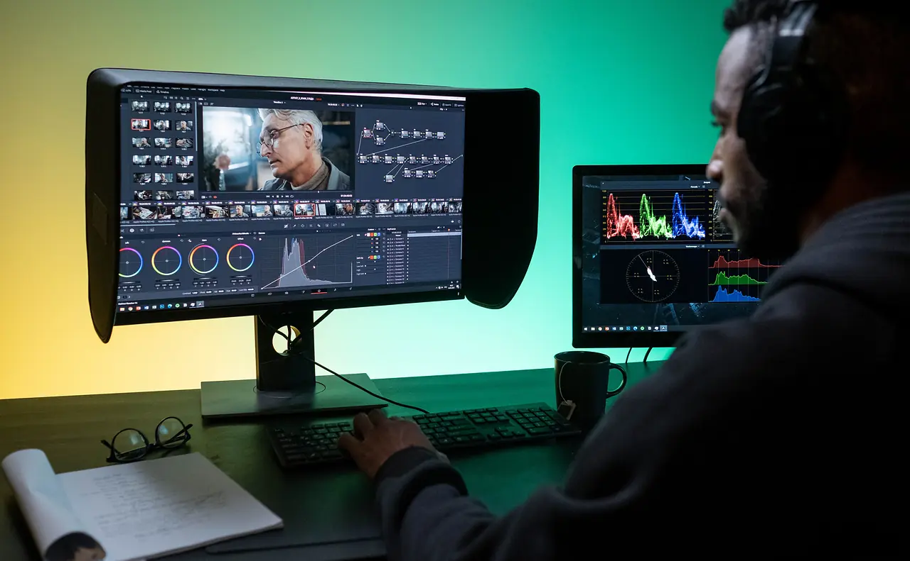

Motion graphic
Làm video motion graphic mất bao lâu? Quy trình từng bước và bạn cần duyệt gì
Câu hỏi đầu tiên của nhiều doanh nghiệp khi cần video cho buổi ra mắt hay chiến dịch là: kịp không? Bài này chia quy trình làm motion graphic thành từng bước, mỗi bước bao lâu, bạn cần duyệt gì và điều gì làm lịch bị kéo dài.

Làm video motion graphic mất bao lâu phụ thuộc vào độ dài và độ phức tạp: logo animation hoặc video dưới 15 giây thường mất khoảng 4–5 ngày, video explainer 60 giây có kịch bản và lồng tiếng khoảng 7–10 ngày, video 2 phút kết hợp 2D và 3D khoảng 2–3 tuần. Đó là thời gian làm khi tư liệu đủ và khách phản hồi đúng hẹn; phần lớn trễ hạn đến từ khâu duyệt, không phải khâu làm.
Bài này đi qua từng bước của quy trình, mỗi bước thường mất bao lâu, bạn cần duyệt gì ở mỗi mốc và cách rút ngắn lịch mà không làm giảm chất lượng. Nếu bạn chưa rõ motion graphic là gì và khác gì video quay, hãy đọc trước bài video motion graphic là gì, giá bao nhiêu.
Tổng quan: thời gian theo loại video
Thời gian không tăng đều theo số giây. Một video 60 giây không mất gấp bốn lần video 15 giây, vì có những bước cố định như brief, chốt phong cách, nhưng cũng có những bước nhân lên theo số cảnh như thiết kế và làm chuyển động.
| Loại video | Phạm vi | Thời gian thực hiện | Số vòng sửa |
|---|---|---|---|
| Logo animation, intro ngắn (gói Cơ bản) | Logo animation hoặc video ≤ 15 giây, 2D | 4–5 ngày | 4 vòng |
| Bộ 3 video ngắn (gói Chuyên nghiệp) | 3 video, mỗi video ≤ 30 giây, kịch bản, storyboard, minh họa 2D, lồng tiếng AI | 7–10 ngày | 9 vòng |
| Video dài hơn hoặc có 3D (báo giá riêng) | Video trên 30 giây, 2D + 3D, art direction riêng, sound design | Thường 2–3 tuần | Theo báo giá |
Thời gian ghi trong gói là thời gian làm việc dự kiến. Lịch thực tế còn phụ thuộc tốc độ bạn gửi tư liệu và phản hồi mỗi mốc duyệt, nên khi lên kế hoạch hãy cộng thêm thời gian nội bộ của bạn.
Quy trình 7 bước và thời gian từng bước
Dưới đây là quy trình cho một video explainer 60 giây kiểu 2D, loại phổ biến nhất. Video ngắn hơn sẽ gộp hoặc rút gọn một số bước; video có 3D thêm thời gian dựng mô hình và render.
Bước 1. Brief: nửa ngày đến 1 ngày
Một buổi trao đổi để chốt: video nói về gì, người xem là ai, đăng ở đâu, dài bao nhiêu, khách cần làm gì sau khi xem. Bên làm tóm lại thành bản brief.
Bạn duyệt: bản brief. Đọc kỹ phần thông điệp chính, vì mọi bước sau đều dựa vào đó.
Bạn chuẩn bị: logo dạng vector, màu và phông chữ thương hiệu, tài liệu sản phẩm, một hai video tham khảo bạn thích kèm lý do.
Bước 2. Kịch bản: 1–2 ngày
Kịch bản chia video thành từng cảnh, mỗi cảnh ghi lời đọc, chữ trên màn hình và số giây. Thời lượng 60 giây trôi rất nhanh khi đọc thành tiếng, nên mỗi câu đều phải được cân nhắc: câu nào không giúp người xem hiểu hoặc hành động thì nên bỏ.
Bạn duyệt: từng câu chữ, tên sản phẩm, con số, thuật ngữ chuyên ngành. Đây là mốc quan trọng nhất: sửa một câu ở đây mất vài phút, sửa sau khi đã làm chuyển động có thể mất cả ngày.
Bước 3. Storyboard: 1–2 ngày
Storyboard là bản phác thảo từng cảnh theo thứ tự, như truyện tranh khổ nhỏ. Mục đích là chốt cách kể: cảnh nào hiện gì, chuyển từ cảnh này sang cảnh kia ra sao, chưa cần đẹp.
Bạn duyệt: trình tự cảnh và ý tưởng hình ảnh của mỗi cảnh. Đừng góp ý về màu hay nét vẽ ở bước này, vì đó là việc của bước sau.
Bước 4. Styleframe: 1–2 ngày
Styleframe là hai đến bốn khung hình được thiết kế hoàn chỉnh, đại diện cho phong cách cả video: màu, kiểu chữ, kiểu minh họa, nhân vật. Video có 3D thì đây là lúc chốt chất liệu và ánh sáng.
Bạn duyệt: phong cách. Sau mốc này, phần còn lại của video sẽ được thiết kế theo đúng phong cách đã chọn, nên đổi phong cách về sau gần như là làm lại.
Bước 5. Thiết kế toàn bộ cảnh và làm chuyển động: 3–5 ngày
Đây là bước tốn thời gian nhất. Nhà thiết kế vẽ đủ các cảnh còn lại, motion designer làm chuyển động theo nhịp lời đọc. Nhân vật có cử động, chuyển cảnh phức tạp hay 3D phải render đều kéo dài bước này. Với video có 3D, bước này có thể chiếm hơn một nửa tổng thời gian.
Bạn duyệt: bản nháp chuyển động (thường gọi là bản animatic hoặc bản nháp đầu), xem nhịp có kịp đọc chữ không, thông tin có đúng không.

Bước 6. Lồng tiếng, nhạc và âm thanh: 1–2 ngày, làm song song
Giọng đọc thường được thu hoặc tạo ngay sau khi chốt kịch bản, để làm chuyển động khớp theo giọng. Nhạc nền và hiệu ứng âm thanh được ghép khi hình gần hoàn chỉnh. Vì chạy song song với bước 5, phần này ít khi kéo dài tổng lịch.
Bạn duyệt: giọng đọc (nam hay nữ, giọng miền nào, nhanh hay chậm, giọng AI hay giọng thật) và cách đọc tên riêng, tên sản phẩm.
Bước 7. Chỉnh sửa và xuất bản: 1–2 ngày mỗi vòng
Bạn gửi góp ý, bên làm sửa và xuất bản mới. Sau khi chốt, video được xuất các tỷ lệ cần dùng (ngang, dọc, vuông) và bản cắt ngắn nếu có.
Bạn duyệt: bản cuối, kiểm tra trên điện thoại, xem cả khi tắt tiếng để chắc chữ trên màn hình vẫn đủ hiểu.
Ví dụ minh họa lịch 10 ngày làm việc: một doanh nghiệp logistics tại TP.HCM cần video explainer 60 giây giới thiệu dịch vụ giao hàng lạnh. Ngày 1 chốt brief; ngày 2–3 viết và duyệt kịch bản; ngày 4 storyboard; ngày 5 styleframe; ngày 6–8 làm chuyển động, thu giọng song song; ngày 9 sửa vòng một; ngày 10 sửa vòng hai và xuất đủ tỷ lệ. Đây là ví dụ để hình dung, không phải dự án thật.
Logo animation và video có 3D thì khác gì
Logo animation ngắn gộp nhiều bước: không cần kịch bản dài, storyboard chỉ vài khung, thời gian dồn vào việc thử hai ba kiểu chuyển động cho logo rồi chọn một. Ngược lại, video có 3D thêm hai việc riêng: dựng mô hình sản phẩm (từ ảnh nhiều góc hoặc file thiết kế bạn cung cấp) và render, tức máy tính xuất từng khung hình có ánh sáng, chất liệu. Mỗi lần sửa góc máy hay ánh sáng ở cảnh 3D lại phải render lại, nên lịch video có 3D luôn để dư thời gian cho việc này.
Điều gì làm lịch bị kéo dài
- Tư liệu đến muộn: logo không có bản vector, thông tin sản phẩm còn đang chờ phòng ban khác.
- Nhiều người duyệt, góp ý rời rạc: mỗi người gửi một lúc, có khi ý kiến trái ngược nhau.
- Đổi kịch bản sau khi đã làm chuyển động: kéo theo thiết kế lại cảnh, làm lại nhịp, thu lại giọng.
- Đổi phong cách sau styleframe: gần như quay về bước 4.
- Thêm phiên bản phút chót: cần bản dọc cho TikTok khi video đã dàn bố cục ngang.
- Thêm 3D giữa chừng: dựng mô hình và render cần thời gian riêng.
Cách rút ngắn thời gian mà không giảm chất lượng
- Chỉ định một người duyệt cuối. Người này gom góp ý trong nội bộ rồi gửi một lần.
- Gửi đủ tư liệu ngay ngày đầu: logo vector, bảng màu, phông chữ, ảnh sản phẩm, tài khoản dùng thử phần mềm.
- Duyệt kịch bản thật kỹ, đọc to thành tiếng để kiểm tra độ dài và cách nói.
- Chốt danh sách kênh đăng từ brief để bên làm dàn bố cục cho mọi tỷ lệ ngay từ đầu.
- Hẹn trước lịch phản hồi, ví dụ trong vòng một ngày làm việc cho mỗi mốc.
- Chọn phong cách vừa với thời hạn. Cần gấp thì ưu tiên chữ và biểu tượng chuyển động thay vì nhân vật cử động nhiều hoặc 3D.
Nếu bạn cần video giới thiệu sản phẩm cụ thể, bài video motion graphic giới thiệu sản phẩm có thêm phần cấu trúc kịch bản 30–90 giây và khi nào cần dựng 3D.
Sai lầm thường gặp khi lên lịch làm video
- Đặt hạn đúng ngày ra mắt. Không còn chỗ cho một vòng sửa phát sinh hay kiểm tra trên các kênh đăng. Nên nhận bản cuối trước ít nhất vài ngày.
- Bỏ qua storyboard để tiết kiệm thời gian. Thường mất nhiều thời gian hơn ở bước sửa chuyển động.
- Góp ý mơ hồ: "chưa thấy ấn tượng" khó sửa hơn "cảnh 3 chậm quá, chữ chưa kịp đọc".
- Dùng hết vòng sửa cho lỗi chính tả. Hãy rà kỹ chữ ở bước kịch bản để dành vòng sửa cho việc quan trọng hơn.
- Không tính thời gian duyệt nội bộ. Nếu cần ban giám đốc duyệt, hãy đưa lịch họp của họ vào kế hoạch.
Thời gian và chi phí các gói tại Dream Labs
Gói Cơ bản 2.000.000đ/video làm trong khoảng 4–5 ngày, hợp với logo animation hoặc intro ngắn. Gói Chuyên nghiệp 5.000.000đ/3 video khoảng 7–10 ngày cho bộ 3 video, mỗi video đến 30 giây, gồm kịch bản, storyboard, minh họa 2D và lồng tiếng AI. Video dài hơn hoặc kết hợp 3D, liên hệ để nhận báo giá riêng kèm lịch làm cụ thể. Dream Labs cập nhật tiến độ trong suốt bước làm chuyển động để bạn không phải chờ đến cuối mới thấy video.
| Gói | Giá | Thời gian | Bao gồm |
|---|---|---|---|
| Cơ bản | 2.000.000đ/video | 4–5 ngày4 vòng sửa | Một video logo chuyển động hoặc intro ngắn giúp mọi video của thương hiệu trông chuyên nghiệp.
|
| Chuyên nghiệpPhổ biến nhất | 5.000.000đ/3 video | 7–10 ngày9 vòng sửa | Bộ 3 video ngắn cho quảng cáo và mạng xã hội, cùng phong cách, khách nắm được giá trị sản phẩm trong vài giây.
|
Xem thêm ví dụ ở trang dịch vụ video motion graphic, trang logo animation và bảng giá đầy đủ. Có hạn cụ thể, hãy nhắn Zalo 0934 246 420 kèm ngày cần dùng video để được lên lịch ngược.
Câu hỏi thường gặp
Làm một video motion graphic 60 giây mất bao lâu?
Thường khoảng 7–10 ngày làm việc cho video 2D có kịch bản, storyboard và lồng tiếng, với điều kiện tư liệu đủ và mỗi mốc được duyệt đúng hẹn. Có 3D hoặc nhân vật cử động nhiều thì lâu hơn.
Có làm gấp trong 2–3 ngày được không?
Với logo animation hoặc video rất ngắn dùng chữ và biểu tượng chuyển động thì có thể, tùy lịch của đơn vị làm. Video explainer có kịch bản, nhân vật, lồng tiếng thì khó làm gấp mà vẫn đủ vòng duyệt.
Bước nào trong quy trình tốn thời gian nhất?
Bước thiết kế toàn bộ cảnh và làm chuyển động, thường chiếm khoảng một nửa tổng thời gian. Nếu có 3D thì dựng mô hình và render còn kéo dài thêm.
Storyboard và styleframe khác nhau thế nào?
Storyboard là phác thảo trình tự các cảnh để chốt cách kể, chưa cần đẹp. Styleframe là vài khung hình thiết kế hoàn chỉnh để chốt phong cách màu, chữ, minh họa cho cả video.
Khách cần duyệt những gì trong quá trình làm?
Thường có năm mốc: brief, kịch bản, storyboard, styleframe và bản nháp chuyển động, sau đó là các vòng sửa bản cuối. Duyệt kỹ ở kịch bản và styleframe giúp hạn chế sửa lớn về sau.
Đổi kịch bản khi đã làm chuyển động có được không?
Được, nhưng tốn công và kéo dài lịch vì phải thiết kế lại cảnh, làm lại nhịp và có thể thu lại giọng. Thay đổi lớn ở giai đoạn này thường vượt số vòng sửa trong gói.
Lồng tiếng có làm lịch dài thêm không?
Thường không đáng kể, vì giọng đọc được chốt ngay sau kịch bản và làm song song với bước làm chuyển động. Giọng thật cần đặt lịch thu nên có thể thêm một chút thời gian so với giọng AI.
Nguồn ảnh: ảnh bìa: PNW Production / Pexels · ảnh 1: Tima Miroshnichenko / Pexels · ảnh 2: Ron Lach / Pexels · ảnh 3: Reel Focus Productions / Pexels. Ảnh dùng theo giấy phép miễn phí của Pexels, chỉ mang tính minh họa.
Bắt đầu cùng Dream Labs
Có hạn ra mắt và cần video kịp lịch?
Nhắn Zalo cho Dream Labs ngày bạn cần dùng video, độ dài và nơi đăng. Chúng tôi lên lịch ngược từ ngày đó và báo rõ mốc bạn cần duyệt.